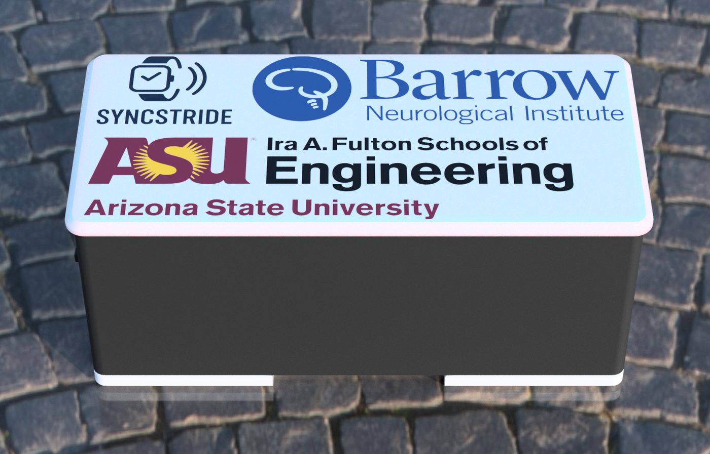
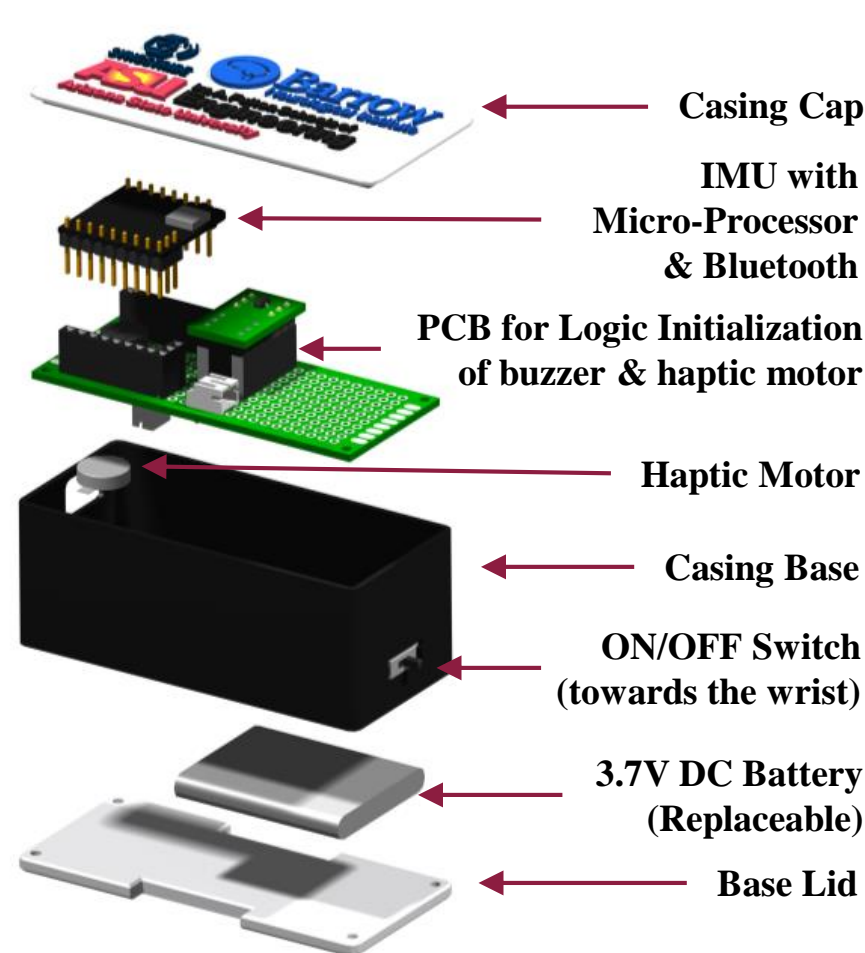
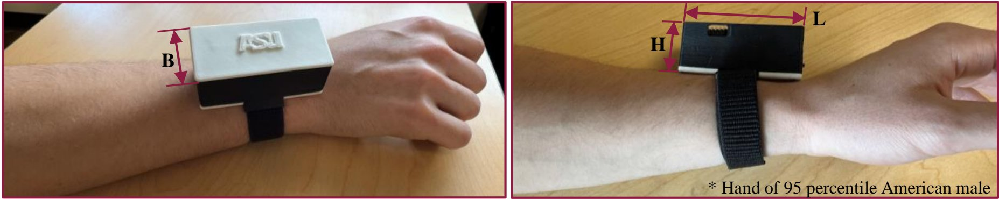
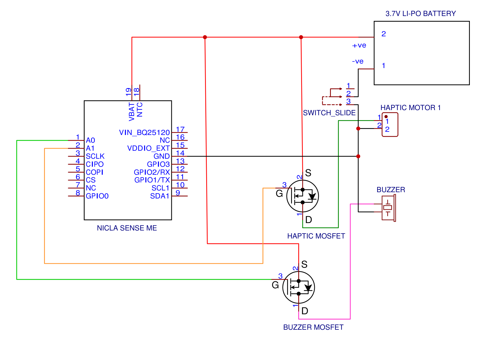
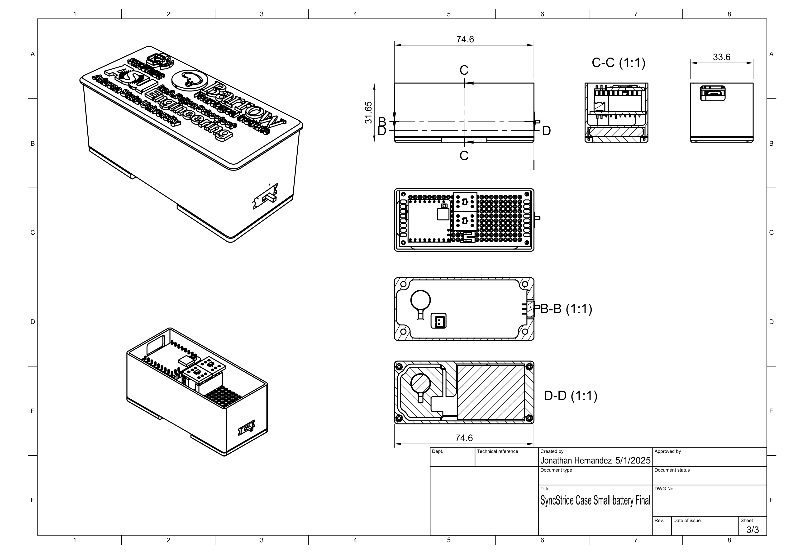

SyncStride
Wrist-worn biofeedback device for arm swing therapy in Parkinson's disease. It measures wrist pitch during walking and gives a vibration cue when the arm reaches forward and backward targets set for each patient during calibration. Sessions can be viewed live and logged to CSV from a browser or the desktop recorder.

Signal chain
-
Orientation
The Nicla Sense ME's on-board sensor fusion outputs a rotation vector quaternion (
SENSOR_ID_RV). -
Pitch
Firmware converts it to wrist pitch:
asin(2(w·y − z·x)), in degrees, clamped to ±90°. - Targets Pitch is compared with the calibrated forward and backward targets (firmware defaults +45° / −45°).
- Cue Reaching the forward target drives one haptic pulse; reaching the backward target drives two.
- Stream Every loop, pitch, both targets and a timestamp are notified over BLE to the console or desktop recorder.
Haptic patterns
| Event | Pattern |
|---|---|
| Pitch ≥ forward target | 1 × 100 ms pulse |
| Pitch ≤ backward target | 2 × 100 ms pulses, 200 ms apart |
| Drive | PWM 255 on pin 11 through MOSFET |
Measured performance
| Haptic latency | 10 ms |
| GUI latency | 100 ms |
| Detection accuracy | ±5° |
| BLE range | ~12 m |
| Battery life | 4+ h continuous |
Bluetooth interface
Advertised name SyncStride. All UUIDs share the base
12345678-XXXX-1000-8000-00805f9b34fb.
| Characteristic | UUID | Access | Payload |
|---|---|---|---|
| Service | 12345678-0000-… |
- | - |
| Pitch | 12345678-0001-… |
Read, Notify | 16 bytes, 4 × float32 little-endian: pitch (°), forward target (°), backward target (°), device time (ms) |
| Calibration | 12345678-0003-… |
Write | 1 byte: 1 idle, 2 forward, 3 backward. Stores the current pitch as that target. |
Hardware

Assembly
- Casing capPrinted lid
- Nicla Sense MEIMU, microcontroller and Bluetooth
- Driver PCBMOSFET switching for the buzzer and haptic motor
- Haptic motorCoin vibration motor against the wrist
- Casing basePLA, on/off switch on the wrist side
- Battery3.7 V Li-Po, replaceable
- Base lidCloses the battery bay

| Dimensions (L × B × H) | 74.6 × 33.6 × 31.65 mm |
| Weight | 66 g |
| Enclosure | PLA |
| Strap | Nylon sport loop |
| Controller | Arduino Nicla Sense ME |
| Power | 3.7 V Li-Po |
| Parts cost | $110 |

Schematic → PDF
Case drawing → PDFDesktop recorder
Python BLE app with live plot, calibration and CSV logging. CSV columns: Timestamp (PC), Pitch (deg), Forward Swing Pitch (deg), Backward Swing Pitch (deg), Device Timestamp (ms). The web console exports the same format.
Documents

Team
- Shashank Singh Deo
- Michael Gross
- Glen Stevens
- Jonathan Hernandez
- Nitish R. Dyapa
- Heman S. Chagarlamudi